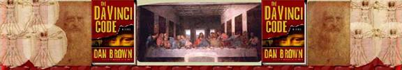
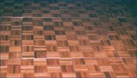
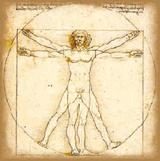

Chapter 8

Chapter 8
Katelyn Cannella
Draconian
Draco
Lame Saint
Cipher
Cryptographer
Digit
Communiqué
Précisément
The Vitruvian Man
Nature's divine order
Demonic aura
Alchemic power
Elixir
La vengeance
Numeric code
Cajoler
The pedophilia scandal
GPS Tracking System
La marque
Parquet floor A wooden flooring composed of pieces of wood, often of different kinds, arranged in a pattern; a flooring of parquetry.
1816 P. F. TINGRY Painter & Varnisher's Guide (ed. 2) 384 Distemper for parquets, or floors of inlaid work. Ibid., The name of parquets is given to boards of fir intersected by pieces of walnut-tree, or disposed in compartments of which the walnut-tree forms the frame or border. 1867 ‘OUIDA’ C. Castlemaine (1879) 10 None such as these could cross the inlaid oak parquet of Lilliesford. Oxford English Dictionary Online Second Edition 1989 http://dictionary.oed.com/cgi/entry/00171970

http://www.qualityrental.com/planner2/parquetdance.jpg

Draconian Of, pertaining to, or characteristic of Draco, archon at Athens in 621 B.C.
1876 C. M. DAVIES Unorth. Lond. 97 The Swedenborgian rubrics are not so Draconian. 1877 D. M. WALLACE Russia xiii. 206 Refraining from all Draconian legislation. 1880 Daily Tel. 10 Nov., In the course of one of these draconian performances...the mummer's tail came off. Oxford English Dictionary Online Second Edition 1989 http://dictionary.oed.com/cgi/entry/00069438
Draco Athenian lawgiver whose harsh legal code punished both trivial and serious crimes in Athens with death—hence the continued use of the word draconian to describe repressive legal measures.
“Draco.” Encyclopædia Britannica. 2004. Encyclopædia
Britannica Online.
19 Sept. 2004 <http://search.eb.com/eb/article?tocId=9031112>.
Lame Saint This is used in The DaVinci Code as an anagram. When the letters of the phrase “Oh, lame saint!” are rearranged they spell “The Mona Lisa”. This directs Robert Langdon and Sophie Neveu to go to Leonardo DaVinci’s famous painting The Mona Lisa.
Cipher A secret or disguised manner of writing, whether by characters arbitrarily invented (app. the earlier method), or by an arbitrary use of letters or characters in other than their ordinary sense, by making single words stand for sentences or phrases, or by other conventional methods intelligible only to those possessing the key; a cryptograph.
1528 GARDINER in Pocock Rec. Ref. I. No. 48. 92 We think not convenient to write them, but only in cipher. 1812 WELLINGTON in Gurw. Disp. IX. 235 We have deciphered the letter you sent and it goes back to you with the key of the cipher. Oxford English Dictionary Online, Second Edition 1989
http://dictionary.oed.com/cgi/entry/00040046
Cryptographer One who writes in or is skilled in cipher.
1896 Daily News 3 Feb. 3/4 He has...been very successful as a cryptographer, and published…what is perhaps the only attempt at a scientific method of analysis of ciphers. 1959 Chambers's Encycl. IV. 280/1 The countries at war [in 1914-18] established numerous intercepting stations...and also a staff of cryptographers.
Oxford English Dictionary Online, Second Edition 1989
http://dictionary.oed.com/cgi/entry/00055183/00055183
Digit: Each of the numerals below ten (originally counted on the fingers), expressed in the Arabic notation by one figure; any of the nine, or (including the cipher, 0) ten Arabic figures.
[1398 TREVISA Barth. De P.R. XIX. cxxiii. (1495) 923 Eche symple nombre byneth ten is Digitus: and ten is the fyrst Articulus.] 1542 RECORDE Gr. Artes (1575) 53 A Digit is any number vnder 10.
Oxford English Dictionary Online, Second Edition 1989
http://dictionary.oed.com/cgi/entry/00063921
Symbolic progressions See cipher.
Communiqué An official announcement or report.
1852 Illustr. London News 12 June 458/3 [When the Moniteur was charged, in an article headed ‘Communiqué’, to state, that the French Government was not responsible for statements..unless the word communiqué was placed above them]. Ibid., The Moniteur and its communiqué did not disavow the policy. 1959 Ann. Reg. 1958 47 Many meetings of N.A.T.O...had concluded with communiqués far less virile. Oxford English Dictionary Online, Second Edition 1989
http://dictionary.oed.com/cgi/entry/00045230
Précisément: Precisely. http://babelfish.altavista.com/tr
The Vitruvian Man The pen and ink drawing by Leonardo DaVinci, depicting a man fitting his body to a circle and a square by adjusting the position of his arms and legs. Vitruvius was an ancient Roman architect who wrote a series of ten books on architecture - one of the few collections of books of its type that survived into the Renaissance. In the third volume, which is on the proportions of temples, he states that these buildings should be based on the proportions of man, because the human body is the model of perfection. He justifies this by stating that the human body with arms and legs extended fits into the perfect geometric forms, the circle, and the square.

http://thealchemicalegg.com/VitruviusN.html
Nature's divine order Believing in nature’s divine order implies belief that everything happens according to what one needs to experience to grow and to change. It is not that things are preordained. It is about choice. Nothing happens in the dramas that we create that is not in Divine Order.
http://www.goddirect.org/glossary/d.htm#DivineOrder
According to divine order, the pieces of one’s life miraculously seem to arrange themselves so that the person can see the big picture. Sometimes divine order makes things seem hectic and incomprehensible. But if one surrenders to the idea that everything happens for a reason, peace and acceptance can be found.
http://unityworldhq.org/divineorder.htm
Demonic aura A distinctive impression that is characteristic of, or of the nature of, a demon or evil spirit.
1662 EVELYN Chalcogr. 68 Convulsive and even Demonic postures. 1886 Q. Rev. Oct. 53 The traditional demonic proposal, ‘I will be your servant here, and you shall be mine hereafter’. Oxford English Dictionary Online
Second Edition 1989 http://dictionary.oed.com/cgi/entry/00014861 and
http://dictionary.oed.com/cgi/entry/00060631
Alchemic power Closest match: Alchemy: The chemistry of the Middle Ages and 16th century. It is now applied distinctively to the pursuit of the transmutation of baser metals into gold, which (with the search for the alkahest or universal solvent, and the panacea or universal remedy) constituted the chief practical object of early chemistry.
1362 LANGL. P. Pl. A. XI. [152 Astronomye is hard ing] 157 Experimentis of Alconomye [v.r. alkenemye, alknamye]. 1377 Ibid. B. x. 212 Experimentz of alkamye [v.r. alkenemye, alconomie, alle kyn amye] e poeple to deceyue. 1837 WHEWELL Induct. Sc. (1857) I. 232 It has been usual to say that Alchemy was the mother of Chemistry. Oxford English Dictionary Online, Second Edition 1989
http://dictionary.oed.com/cgi/entry/00005304
Elixir A supposed drug or essence with the property of indefinitely prolonging life.
[1266 ROGER BACON Opus Minus (Rolls Ser.) 314 Medicinam..quam philosophi vocant Elixir..Si libra medicinæ projiciatur super mille plumbi fiet..aurum..Et hoc est quod corpora infirma reducet ad sanitatem..et vitam..ultra contenarios annorum prolongabit.] 1605 TIMME Quersit. I. xiii. [Mercury, sulphur, and salt]..brought into one bodie (which the Arabians call elixir)..wil be..a medicine, etc. 1799 GODWIN St. Leon IV. 324 The..secrets of alchemy and the elixir vitæ. 1826 MISS MITFORD Village Ser. II. (1863) 318 Honey..was, in her mind..the true elixir vitæ. 1831 BREWSTER Nat. Magic xii. (1833) 299 Though the elixir of life has never been distilled. 1873 DIXON Two Queens I. II. i. 75 Carillo had been glad to toy with magic, and pursue the elixir of life.
Oxford English Dictionary Online, Second Edition 1989
http://dictionary.oed.com/cgi/entry/00073248
"Thumbing of his nose": a. To put one's thumb to one's nose
and extend the fingers as a crudely defiant or contemptuous gesture.
b. to express defiance or contempt; dismiss or reject contemptuously.
La vengeance: Revenge. http://babelfish.altavista.com/tr
Numeric code: A list of numbers arranged as a key for encoding and decoding.
Oxford English Dictionary Online, Second Edition 1989
http://dictionary.oed.com/cgi/entry/00043027
Cajoler One who cajoles or overcomes by flattery. To cajole is to prevail upon or get one's way with (a person) by delusive flattery, specious promises, or any false means of persuasion.
1677 HOBBES Homer 38 Cajoler, that confidest in thy face. 1814 Monthly Rev. LXXIV. 477 Cajolers of the people. 1841 CATLIN N. Amer. Ind. (1844) II. lviii. 238 The superior tact and cunning of their merciless cajolers.
Oxford English Dictionary Online, Second Edition 1989
http://dictionary.oed.com/cgi/entry/00031240 and http://dictionary.oed.com/cgi/entry/00031237
The pedophilia scandal Over the past fifteen years there have been widespread reports and accusations of sexual abuses carried out by Roman Catholic priests against children and teenagers, mostly male. In many cases the abuse took place so long ago that the statute of limitations prevented them from being charged with crimes. However, in Cambridge, Mass., a Father Geoghan, who was accused of abuse by more than 100 minor victims, was convicted and sent to prison. Worse than that was the revelation that the Boston archdiocese had been aware, and covered up, abuse by many of its priests. In 2002 the Pope met with Catholic bishops to discuss the problem. It was later discovered that this problem is not limited to the U.S. but occurred in many other countries.
GPS tracking system Global Positioning System. A receiver that calculates its absolute geographic position by determining its relative position to a set of at least three satellites. Glossary of GIS and Remote Sensing Terms
http://fwie.fw.vt.edu/tws-gis/glossary.htm
La marque: The mark. http://babelfish.altavista.com/tr